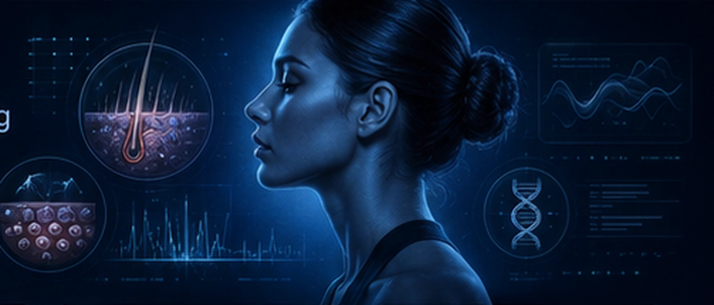
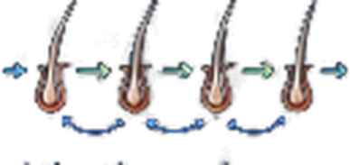
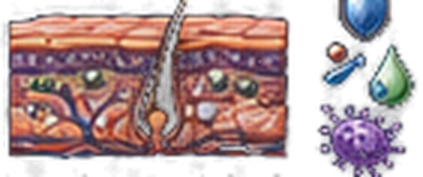
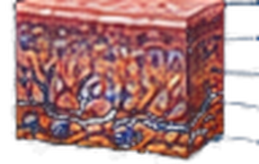
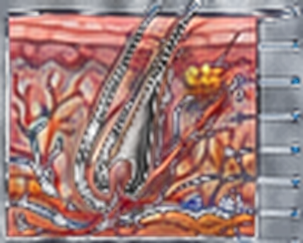
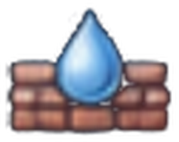
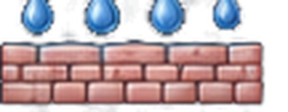
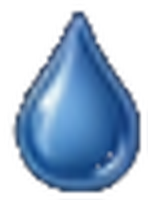

Hair-Scalp Biology
4 core biological effects
6 visible outcomes
Exercise-induced systemic and neuroendocrine signals support beauty through circulatory, anti-inflammatory, regenerative, and homeostatic pathways.

4 core biological effects
6 visible outcomes
5 signal pathways
Multi-organ crosstalk
5 core biological effects
7 visible outcomes
5 longevity supports
Evidence-based
Exercise-related biological drivers support hair-scalp effects and visible beauty outcomes, with neuroregulatory inputs and recovery factors modulating the pathway.
Enhanced blood flow
to scalp tissues
Supports follicle
metabolism & growth
Optimal hormone
& stress regulation
Reduces inflammation
& oxidative stress
Protects cells & boosts
energy production


• Intensity • Duration • Frequency
• Progression • Recovery
Prefrontal Cortex cognition, motivation
Limbic System affect, reward
Hypothalamus HPA, ANS control
Dopamine • Serotonin • Norepinephrine
Acetylcholine • GABA • Beta-endorphin
Endocannabinoids
HPA axis • Sympathetic–Parasympathetic
HPT axis • HPG axis
BDNF • IGF-1 • VEGF



Stronger barrier & hydration homeostasis

Protects against
photoaging &
oxidative damage
Preserves cellular &
mitochondrial
function
Maintains
collagen &
ECM integrity
Enhances repair
capacity & resilience
Slows visible
signs of aging